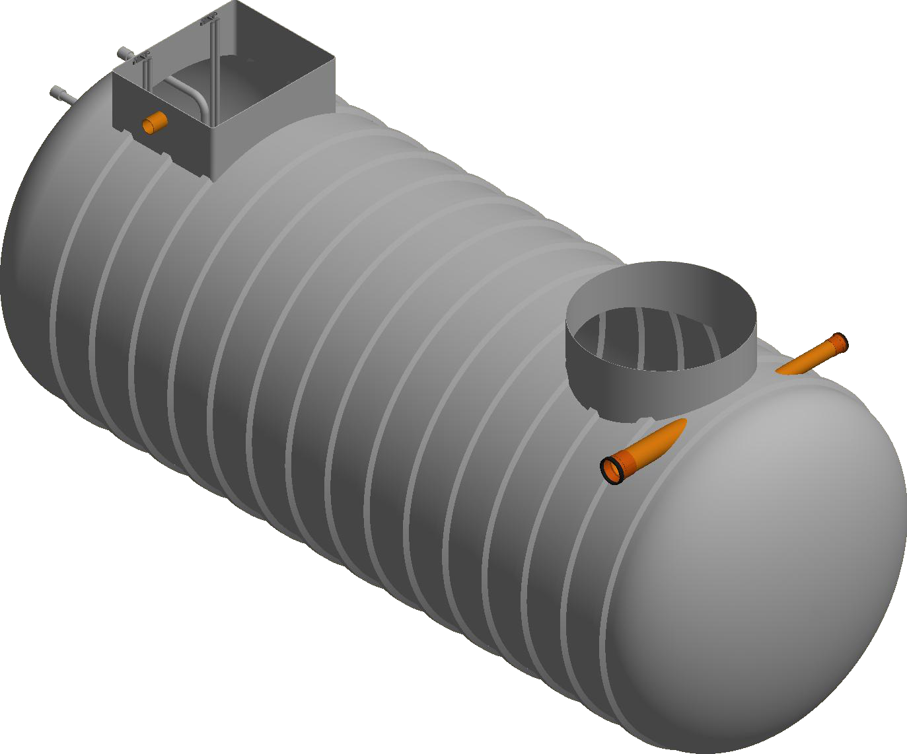

Overview
RhinoLift packaged pumping stations move foul water, stormwater and grey water where gravity drainage is impractical or impossible. Each station is custom-built to the flow and storage the project needs, from a single dwelling to large commercial sites.
Chambers are MDPE or GRP for strength and durability. Stations are fitted with vortex or macerator pumps, as a single pump or a dual duty-standby pair.
How it works
Flow collects in the chamber and is pumped from the low-lying area to a higher point for onward treatment or disposal. Vortex pumps pass solids of up to 50 mm diameter. In a duty-standby station one pump runs while the other stands ready, so the station keeps working through peak demand or maintenance.
Design compliance
- BS EN 12050-1 lifting plants for wastewater containing faecal matter
- Building Regulations Part H
- Water Industry Act 1991
- Electrical Equipment (Safety) Regulations

Features & benefits
- MDPE or GRP chamber
- Single vortex pump or dual duty-standby
- Vortex pumps pass solids up to 50 mm
- Optional macerator pumps for fine grinding
- Built to order for each site
- Optional high-level alarms and telemetry
- Optional Bluetooth monitoring and diagnostics
Chamber sizes
Standard chambers in MDPE or GRP. Larger bespoke stations are built to order, as in the drawings on pages 2 and 3.
Applications
- Sewage from residential, commercial and industrial sites
- Stormwater from driveways, car parks and roofs
- Grey water systems in homes and commercial buildings
Specification
| Chamber | MDPE or GRP |
|---|---|
| Sizes | 600, 750, 900, 1050, 1200 mm |
| Pumps | Vortex (solids to 50 mm) or macerator |
| Configuration | Single pump or dual duty-standby |
| Controls | High-level alarm, telemetry, Bluetooth options |
| Lead time | Built and delivered in 24 to 48 hours |
| Warranty | 1 year, terms apply |